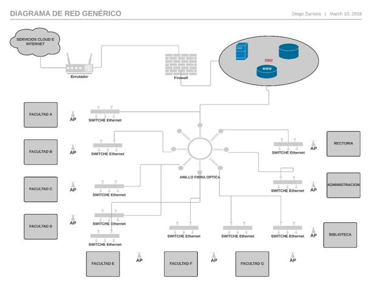

CUADROS COMPARATIVOS
MEDIOS DE TRANSMISION
|
MEDIOS GUIADOS |
MEDIOS NO GUIADOS |
|
Se conducen a traves de un campo fisico (cables). |
Transportan las ondas electromagneticas a traves del aire, sin cables. |
|
Los medios mas utilizados son el coaxial, cable trenzado UTP, fibra optica. |
Se transmite por el aire a traves de antenas desde el emisor hasta el receptor. |
|
Es el propio medio el que limita la velocidad de transmision. |
Es mas determinante en la transmisión el espectro de frecuencia de la señal producida por la antena. Cubren grandes distancias. |
|
Costos moderados y bajos. |
Menor costo que un cableado. |
|
Cable coaxial: Numerosas conexiones, rango de frecuencia mas altos, pantalla exterior contra ruidos, distancias hasta de 1 Km aprox. |
Ondas de radio: faciles de generar, largas distancias, viajan en todas las direcciones. |
|
Trenzado UTP: conexiones faciles de hacer, facil manejo y configuracion. Distancia entre 90 mts y 1 km aprox, sensible a interferencias. |
Microondas: permiten transmisiones terrestres como satelites, ondas viajan en linea recta, no atraviesan bien obstaculos, menor atenuacion. |
|
Fibra optica: Ondas de luz para transmision binaria. Ancho de banda muy alto, inmunidad frente al ruido, medio de alto costo, instalacion especializada. Dependiendo del modo de uso pueden llegar a distancias entre 300 mts hasta 2 kms. (monomodo - multimodo) |
Infrarrojos: comunicacion de corto alcance, no atraviesan obstaculos pero ofrecen mas seguridad porque la comunicacion no sale del edificio. |
INTERFERENCIAS, RUIDO COSMICO Y DESVANECIMIENTO DE SEÑALES
|
INTERFERENCIAS, RUIDO COSMICO |
DESVANECIMIENTO DE SEÑALES |
|
Definicion: Cuando dos señales se interrumpen entre si o bien es el fenomeno que ocurre cuando dos o mas ondas ocupan el mismo espacio al mismo tiempo. |
Definicion: El termino desvanecimiento se refiere a que dicha señal es atenuada debido a la perdida en el espacio, los obstaculos y resistencia que debe traspasar durante toda su trayectoria hasta su destino. Tambien lo podemos definir como una variacion temporal de la amplitud, fase y polarizacion de la señal recibida con relacion a la señal nominal debido al trayecto de Propagacion: multitrayecto, conductos, reflexion, difraccion y dispersion. |
|
Tipos: Interferencia constructiva y destructiva de dos ondas desfasadas. Interferencia de dos pulsos |
Tipos: Desvanecimiento en gran escala, Desvanecimiento en pequeña escala, Desvanecimiento multitrayectoria, DELAY SPREAD, Desvanecimiento Selectivo en frecuencia, Desvanecimiento Plano, DOPPLER SPREAD, Desvanecimiento Rapido, Desvanecimiento Lento |
|
Ruido: (segunwikipedia) ruido en la comunicacion a toda señal no deseada que se mezcla con la señal util que queremos transmitir. Es el resultado de diversos tipos de perturbacion que tiende a enmascarar la informacion cuando se presenta en la banda de frecuencias del espectro de la señal, es decir, dentro de su ancho de banda. |
DESVANECIMIENTO EN GRAN ESCALA: El desvanecimiento a gran escala representa un promedio de la atenuacion de la potencia de la señal en grandes areas. Los modelos de propagacion a gran escala predicen el comportamiento medio para distancias corresponden a cambios del valor medio de la señal cuando la distancia del transmisor al receptor varia significativamente. |
|
Causas: El ruido se debe a multiples causas: a los componentes electronicos (amplificadores), al ruido termico de las resistencias, a las interferencias de señales externas, etc. Es imposible eliminar totalmente el ruido, ya que los componentes electronicos no son perfectos. Sin embargo, es posible limitar su valor de manera que la calidad de la comunicacion resulte aceptable. Tipos de ruido: Ruido de disparo, es un ruido electromagnetico tambien llamado ruido de transistor, producido por la llegada aleatoria de componentes portadores (electrones y huecos) en el elemento de salida de un dispositivo, como ser un diodo, un transistor (de efecto de campo o bipolar) o un tubo de vacio. El ruido interno es interferencia electromagnetica generada dentro del circuito. Son ruidos internos a un circuito el termico, el de disparo y el de tiempo de transito. Es importante destacar que cada uno de estos ruidos es un componente del ruido interno total. Este, denominado simplemente ruido interno, puede calcularse por diferencias de ganancias o perdidas, o medirse. El ruido termico, es electrico y es producido por la energia interna de la materia. Ruidos no correlacionados externos Los tipos de ruidos externos mas destacables tienen que ver con los producidos fuera del circuito por la naturaleza o por el hombre y obviamente son no correlacionados. Los principales son los atmosfericos, los extraterrestres y los industrial |
DESVANECIMIENTO EN PEQUEÑA ESCALA: El desvanecimiento a pequeña escala, o simplemente desvanecimiento, es un termino para describir la rapida fluctuacion de la amplitud y la fase de una señal de radio en un corto periodo o durante el viaje de esta en una distancia corta en relacion a su longitud de onda. DESVANECIMIENTO MULTITRAYECTORIA: Causado por multiples Reflexiones, Difraccion, Dispersion de la señal transmitida y que llegan al receptor, crea efectos de desvanecimiento a pequeña escala, de los cuales los tres mas importantes son: Rapidos cambios en la intensidad de la señal sobre una corta distancia de viaje o en intervalos. Modulacion de frecuencia aleatoria debido a cambios en la Dispersión Doppler de diferentes señales multitrayectoria. (Movimiento). Dispersiones en el tiempo (ecos) causadas por retardos en la propagacion multitrayectoria. DELAY SPREAD: El delay spread caracteriza los sucesivos ecos de señal recibidos. Estos ecos introducen una dispersion temporal sobre la señal transmitida, de modo que la suma de todos los ecos tiene como efecto un filtrado selectivo en frecuencia, decir, la señal sufre atenuaciones diferentes a frecuencias distintas. |
|
El ruido cosmico es producido por fuentes de radiofrecuencia naturales aleatoriamente distribuidas por el universo, y por tal razon tiene una respuesta bastante plana entre los 8 y 1500 MHz y de presencia uniformemente distribuida en el cielo, aunque debido a la lejania de las formaciones galacticas es de una intensidad muy baja. El ruido tambien puede ser provocado por el hombre. |
DESVANECIMIENTO SELECTIVO EN FRECUENCIA: Si Bs>Bc, el canal se distorsiona, no conserva el espectro de la señal transmitida y se le denomina CANAL SELECTIVO EN FRECUENCIA, es causado por la interferencia entre uno o mas rayos de la atmosfera. DESVANECIMIENTO PLANO (Flat Fading): Si Bs DESVANECIMIENTO LENTO: Se deben a la presencia de algun obstaculo de grandes dimensiones, es decir, son provocados por Zonas de Sombra (Shadowing) que impiden la vision directa entre el emisor y receptor. Esto contribuye con una atenuacion adicional que se suma a las perdidas por distancia. La duracion real del desvanecimiento lento esta sujeta a la velocidad de desplazamiento del terminal movil. Estas perdidas tienen una variacion temporal lenta. |
|
Estrategias para minimizar el ruido es imposible eliminar el ruido al 100 por ciento ya que niongun circuito es perfecto y siempre habra una pequeña cantidad de ruido el objetivo es evitar el ruido lo mas que se pueda. En el caso del ruido termico o de termoagitacion, se requiere que los equipos de comunicaciones y en si todos los equipos electronicos y de computo se coloquen en salas que tengan aire acindicionado y que esten siempre a una temperatura de 15º C. Max. Sistema de aterrizaje de la linea de energia electrica o Sistemas de tierra. Con el fin de minimizar el ruido producido por descargas electricas, descargas atmosfericas y los problemas electricos causados por motores, alta tension, Etc. se recomienda aterrizar el sistema electrico. |
DESVANECIMIENTO RAPIDO: En un entorno de comunicaciones moviles, la señal recibida en un instante y lugar es la resultante de la suma de todas las trayectorias provocadas por las reflexiones del frente de onda en los objetos cercanos en direccion a la antena receptora. Cada uno de los rebotes incide con una amplitud y fase distinta, que depende del coeficiente de reflectividad, y con un retardo distinto. Sin embargo, si los objetos estan muy proximos a la antena receptora la diferencia entre los distintos retardos es como se puede apreciar en la figura cada una de las reflecciones que se producen introducen un retardo adicional distinto, puesto que recorren distintas distancias. |
TCP Y OSI
|
... |
... |
|
... |
... |
CODIFICACION Y DECODIFICACION DE SEÑALES
|
CODIFICADOR |
DECODIFICADOR |
|
Es un circuito hecho para pasar informacion de un sistema a otro en claves diferentes. |
Es un circuito combinaciones, donde para cada combinacion de las entradas, solo una de las salidas tiene un nivel logico diferente a las demas. |
|
Muestra en la salida la combinacion correspondiente al codigo binario de la entrada activada. |
Este circuito realiza una operacion analoga a la de un demultiplexor, pero sin entrada de informacion. |
|
Convierte una entrada no binaria en una salida de estricto orden binario. |
Posee N lineas de entrada para gestionar N bits y en una de las 2^N lineas de salida indica la presencia de una o mas combinaciones de n bits. |
|
Proporcionan otras operaciones de conversion |
Su funcion principal es la de direcciones espacios de memoria. |
|
Tiene hasta 2^n entradas y n salidas. |
Para cualquier codigo dado en las entradas solo se activa una de las posibles N salidas. |
|
Transforman una serie de señales sin codificar en un conjunto de señales codificadas, que forman un codigo. |
Detecta la presencia de una determinada combinacion de bits en sus entradas y deben señalar la presencia de este codigo mediante un cierto nivel de salida. |
|
Tipos de codificadores: Codificadores sin prioridad y Codificadores con prioridad. |
Tipos de decodificadores: Decodificadores binarios básicos, Decodificador de 4 bits o Decodificador 1 de 16, Decodificador BCD a decimal, y Decodificadores BCD a 7 segmentos. |
IPV4 Y IPV6
Diferencias
|
Descripcion |
Direccionamiento IPV4 |
Direccionamiento IPV6 |
|
Tamaño y formato de las direcciones |
32 bits = 2^32 direcciones ˜ 4,3 miles de millones de direcciones, suelen estar disponibles en forma decimal. |
128 bits = 2^128 direcciones ˜ 340 miles de trillones de direcciones, se muestran en forma hexadecimal lo que facilita su lectura, esto no solo combate la creciente escasez de direcciones IP, sino que tambien permite direccionar a todos los dispositivos de una red de forma inequivoca. |
|
Cabecera IP |
Longitud variable de 20-60 bytes, segun las opciones IP existentes. |
Longitud fija de 40 bytes. No existen opciones de cabecera IP. En general, la cabecera IPv6 es mas sencilla. |
|
Tiempo de vida maximo de la direccion |
Gestionadas por DHCP |
Las direcciones IPv6 tienen dos tiempos de vida: el preferido y el valido. El tiempo de vida preferido siempre es <= valido. |
|
Seguridad |
La implementacion de IPsec es opcional. |
IPsec esta integrado de forma nativa en IPv6 para autenticar y cifrar los paquetes de datos. |
|
Conexion LAN |
La interfaz IP utiliza la conexión de LAN para acceder a la red fisica. Existen muchos tipos diferentes; por ejemplo, token ring y Ethernet. Tambien se conoce como la interfaz, enlace o linea fisica. |
IPv6 puede utilizarse con cualquier adaptador Ethernet y tambien se soporta a traves de Ethernet virtual entre particiones logicas. |
|
Configuracion |
Debe configurar un sistema recien instalado para que pueda comunicarse con otros sistemas; es decir, deben asignarse rutas y direcciones IP. |
La configuracion es opcional, segun las funciones requeridas. IPv6 puede utilizarse con cualquier adaptador Ethernet y puede ejecutarse a traves de la interfaz de bucle de retorno. |
|
Conversion de direcciones de red (NAT) |
Funciones basicas de cortafuegos integradas en TCP/IP, configuradas con System i Navigator. |
IPv6 no requiere NAT. El mayor espacio de direcciones de IPv6 soluciona el problema de escasez de direcciones y permite una renumeracion mas sencilla. |
Similitudes
|
... |
... |
|
... |
... |
|
... |
... |
|
... |
... |
|
... |
... |
|
... |
... |
|
... |
... |
|
... |
... |
PROBLEMATICA UNIVERSIDAD ESTATAL
Una universidad estatal en Colombia, cuenta con 51000 estudiantes, el area de su campus universitario es de 10000 metros cuadrados, cuenta con 10 edificios, donde siete de ellos son las escuelas o facultades que maneja, 3 son para el area administrativa, la biblioteca y la rectoria, todos distribuidos en su campus fisico.
Actualmente cuenta con siete aulas de informatica de uso general y cuatro de tipo especifico en el edificio de ingenieria, actualmente todos los edificios estan interconectados entre si mediante un anillo de fibra optica que instalo la universidad el año pasado, por lo tanto, la conectividad es relativamente buena. El problema radica que aun con 11 laboratorios de informatica con 50 computadores cada uno, no es factible satisfacer la demanda y necesidad de los estudiantes de acceder a los servicios de Internet que ofrece la Universidad, ni para las consultas generales que hacen los mismos. Adicional a lo anterior se han encontrado los siguientes problemas:
1- La red informatica de la universidad, es una gran red plana, es decir no tiene una buena administracion.
2- Hay conflictos con las direcciones IP.
3- Se tienen muchos servidores DHCP independientes.
4- Las redes inalambricas que se han instalado no dan abasto a todos los requerimientos.
5- Muchos problemas más que cada dia aparecen en esta red sin una planeacion adecuada.
¿QUE PROPONEMOS?
Teniendo en cuenta lo anterior y que la universidad cuenta 5100 estudiantes, esto sin contar la planta de docentes y las demas areas, y que muy seguramente se encuentran trabajando con redes LAN, es muy evidente la falta de equipos para conexion, sobre todo para la conexion inalambrica, contando ademas que se cuenta con un excelente ancho de banda y una buena conectividad que proporciona el anillo de fibra optica recien instalado. Se propone trabajar con una red de area de campus o CAN, es decir varias redes de area local instaladas en areas especificas, pero a su vez todas ellas interconectadas para que se puedan intercambiar datos entre si de manera rapida o pueda haber conexion a internet en todo el campus.
En cuanto a la cantidad de equipos de conexion, se requieren como minimo 7 switch mas de 48 puertos cada uno, esto solo para abarcar con la demanda de los 11 laboratorios de informatica existentes, ademas se deberán adicionar por lo menos uno mas para el resto de equipos que puedan existir en las demas aulas del edificio, en la biblioteca se requieren por lo menos 2 switch mas. Teniendo en cuenta que uno de los principales problemas de la universidad es la insatisfecha demanda de red inalambrica y que ya fue determinado por parte del rector y del jefe de sistemas dar de baja a todos los Access point y Routers inalambricos, se recomienda contar con un Access point y un drop por cada tres salones continuos que tenga cada edificio.
1- Implementar redes VLAN, para poder distribuir la carga del trafico y tambien por temas de seguridad para tener separadas las redes que son prioritarias de las redes de usuarios.
2- Aprovechar la red de fibra optica para interconexion de los edificios.
3- La implementacion de las controladoras para los AP es una buena idea, esto permite la administracion centralizada.
4- Comprobar si los switches de red son administrables o en caso contrario reemplazarlos ya que esto permite darle un mejor manejo al trafico de red y tambien por su seguridad.
5- Permitir la administracion del direccionamiento DHCP centralizados o sea por un servidor.
6- El numero de conexiones o equipos maximos por AP es de 128 pero en la realidad el maximo es siempre inferior. Para poder definir este maximo real, debemos tener en cuenta los aspectos tecnicos del equipo y del direccionamiento IP. Como calcular el numero de AP’s requeridos. Para calcular el numero de AP’s debemos conocer:
X = Requerimientos de las aplicaciones (ancho de banda)
Y = Cantidad estimada de usuarios a la cual se le prestara servicios WIFI
Z = Throughput del AP (ver especificaciones tecnicas)
La formula a utilizar sera la siguiente: X * Y / Z = Cantidad de AP’s
7- Se recomienda bloquear lo maximo posible la conexion de dispositivos moviles (smartphones, tablets, iPads, etc) dentro de las redes privadas o administrativas, crear redes WiFi para uso del publico.
Toda esta propuesta puede sufrir cambios de acuerdo a las necesidades que se vayan detectando una vez se inicien las labores de reconocimiento de campo, porque por el momento solo tenemos una problematica planteada y de la misma manera proponemos una solucion general, a continuacion presentamos el esquema de red:

Teniendo en cuenta el gran alcance o la cobertura de la fibra optica, se puede cablear desde el anillo hasta cada switch, como se menciono en los items anteriores, se recomienda que estos sean administrables a fin de segmentar la red cableada de la inalambrica en cada facultad y dada la cantidad de equipos, se hace necesario hacer uso del protocolo IPv6 y lo proponemos de la siguiente manera:
2301:15:AA:0000:: /64
Y a medida que se vayan necesitando subredes se iran añadiendo en el cuarto segmento, asi:
2301:15:AA:0001:: /64
2301:15:AA:0002:: /64
...
2301:15:AA:FFFF:: /64
Como hemos podido ver, IPv6 a diferencia de IPv4 usa hexadecimales por lo que tiene muchisima mas capacidad de albergar grandes cantidades de direcciones IP.
El direccionamiento IPv6 tambien puede sufrir cambios de acuerdo a lo que se vaya encontrando en el trabajo de campo, se hizo con una amplia capacidad de hosts a manera de propuesta, para que no se tengan que hacer grandes ajustes mas adelante.